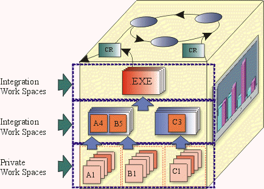

| Concept: Workspaces |
 |
|
| Related Elements |
|---|
DefinitionWorkspaces refer to 'private' areas where developers can implement and test code in accordance with the project's adopted standards in relative isolation from other developers. The Configuration Manager needs to create a workspace environment for each developer on the project. ExplanationA workspace provides each developer with a consistent, flexible, inexpensive, and reproducible environment that selects and presents the appropriate version of each file. The workspace needs to be able to provide fine-grained control over both sharing and isolation. This is required because in most projects, developers need to stay isolated from changes made by others; but at the same time, they must be able to unit-test their changes with changes made by certain other developers. When performing maintenance on older releases, a developer needs to be able to see older versions, binaries, documents, tests, tools, and other objects. In this case the workspace serves as a 'time machine', making everything in the environment, not just the sources, appear as it did in the past. Each developer's workspace needs to be isolated, for purposes of editing, compiling, testing and debugging. However, the isolation of the workspace should be relative and not absolute:
A workspace can be completely private to an individual developer, or shared among a team of developers over a network. In addition to providing access to source versions, a workspace needs to provide private (isolated) storage for files generated during software development:
A workspace's private storage would be typically located within a developer's home directory on a workstation. A workspace shared by a group of developers might have its private storage area located on a central file server. However, the actual location of the private storage is largely irrelevant. From the developer's point of view the workspace's private storage should appear to be fully integrated.  The figure above illustrates the notion of private and integration workspaces in the overall context of the CM Cube. Working ConfigurationsWorking configurations (workspace profiles) refer to particular subsystems that make up a working set for the project. A working set is a list of specific versions of subsystems that must be referenced, or modified, to implement a piece of work. This list may represent the entire system or a subset. ViewsA view provides access to a set of files in the project repository. Moreover, a view provides access to an appropriate set of versions of those files:
A workspace, sometimes also called a view, allows developers to make and test changes in private before sharing the modifications with the rest of the team. There are two types of views:
A snapshot view provides the developer with a stable, unchanging working environment. It is analogous to a computer directory tree. A snapshot view is populated with copies of the appropriate versions of files from one or more project repositories. Some people use the term "sandbox" for such a directory tree. When a developer wants to see changes made by other team members, she updates her view. This style of working is characterized as a pull model as it relies on actively pulling in the relevant information, rather than it being immediately available through automatic refresh mechanisms. A dynamic view is a virtual data structure as it appears to contain all the development data. Dynamic views do not make local copies of files, but rely on over the network immediate updating. Dynamic views may be the best choice in the following situations:
|
| © Copyright IBM Corp. 1987, 2012 All Rights Reserved Property of IBM These materials are intended only for use as part of an IBM engagement |